class: center <br> # Spatial Analysis of Urban Data ## Lecture: Vector Data Analysis in GIS [Bayi Li](mailto:barryli081@gmail.com) <br> <button onclick="window.location.href='vector_tutorial.html'">Go to Tutorial</button> <br> <button onclick="window.location.href='index.html'">Go Back to Menu</button> --- ## Vector Data Analysis - [Buffering](#buffering) - [Overlay](#overlay) - [Distance Measurement](#distance) - [Pattern Analysis](#pattern) --- name: buffering ## Buffering Buffers are common vector analysis tools used to **address questions of proximity** in a GIS and can be used on points, lines, or polygons <div align="center"> <figure> <p>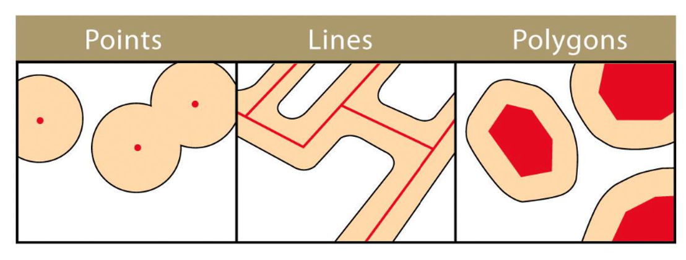</p> <figcaption>Different types of spatial relations based on two Polygon geometries.</figcaption> <figsubcaption>Source: Egenhofer et al. (1992) and https://pythongis.org/part2/chapter-06/nb/05-spatial-queries.html</figsubcaption> </figure> </div> -- The analytical method to answer this kind of questions: <xL>"Which grocery shops are within 200 m of my home?"</xL> ??? To answer such question, what data is needed here? --- .right_half[ <figure> <p>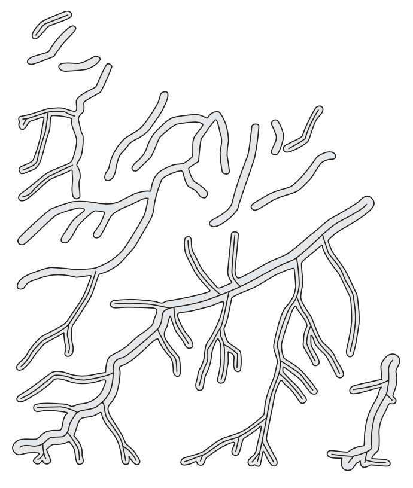</p> </figure> ] ### Customised Buffering I - Two primary types of buffers are available to the GIS users: - Constant width: require users to input a value by which features are buffered - Variable width: uses a premade buffer field within the attribute table to determine the buffer width for each specific feature in the dataset - Linear features can be buffered on both sides of the line, only on the left, or only on the right. Linear features can also be buffered so that the end points of the line are rounded (ending in a half-circle) or flat (ending in a rectangle). --- .right_half[ <figure> <p>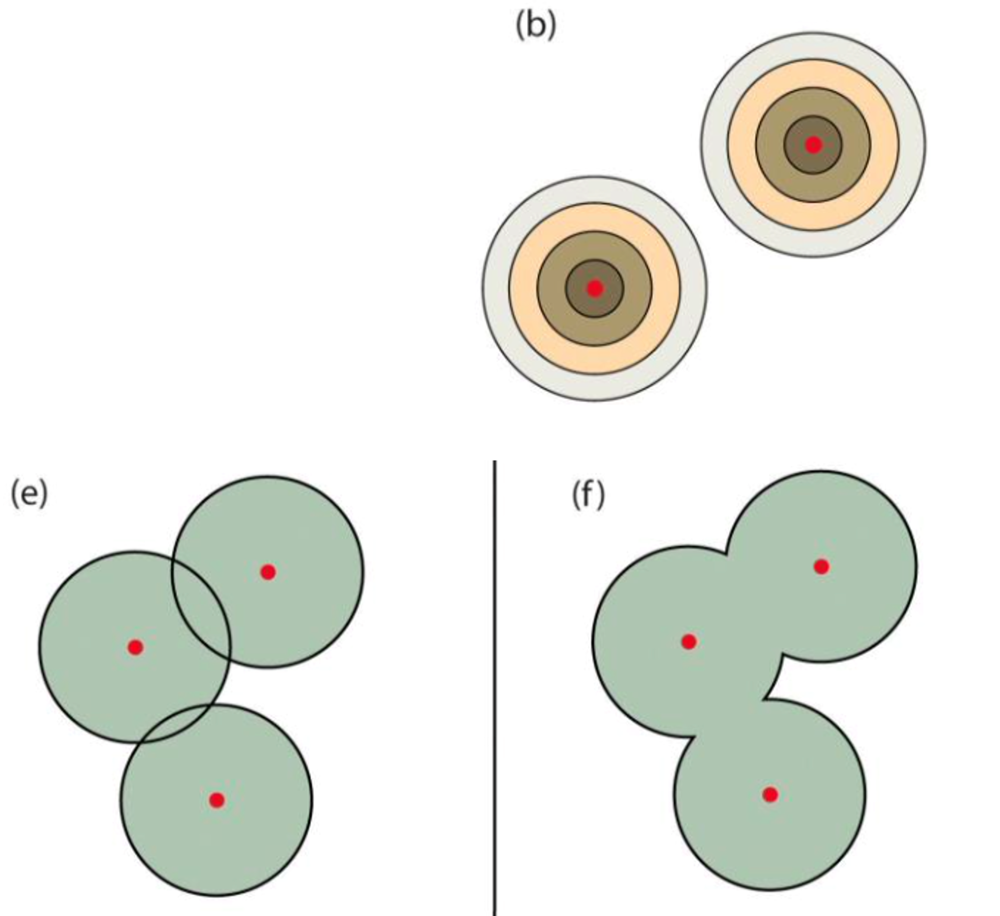</p> </figure> ] ### Customised Buffering II - Multiple ring buffers can be made such that a series of concentric buffer zones are created around the originating feature at user-specified distances - Users can choose to dissolve or not dissolve the boundaries between overlapping, coincident buffer areas --- ### Customised Buffering III .left_half[A doughnut buffer is a buffer around a polygon feature that does not include the area inside the buffered polygon.] .right_half[Setback buffers are similar to doughnut buffers; however, they only buffer the area inside of the polygon boundary.] <br> <div align="center"> <figure> <p>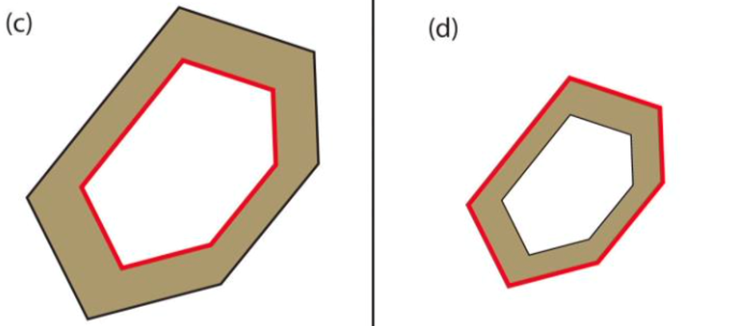</p> </figure> </div> --- .right_half[ <figure> <p>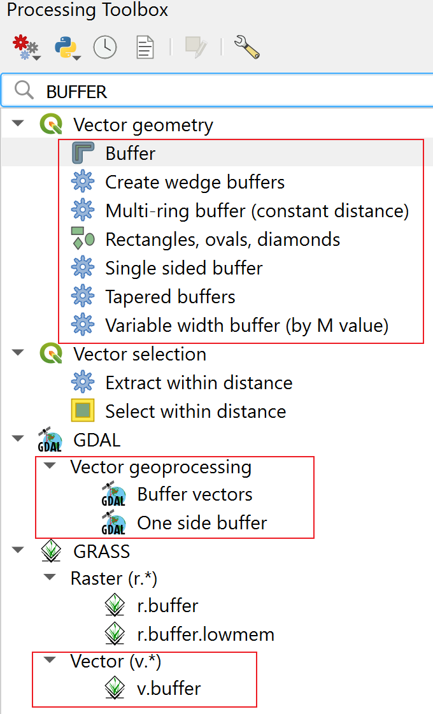</p> </figure> ] ### Buffering with QGIS The diversity of buffering tools avaible in QGIS reflects the different needs and contexts in which buffering is applied QGIS integrates many third-party plugins and algorithms (e.g., from GRASS, GDAL), each offering unique buffering capabilities. --- ### Buffering with QGIS <br> <div align="center"> <figure> <p>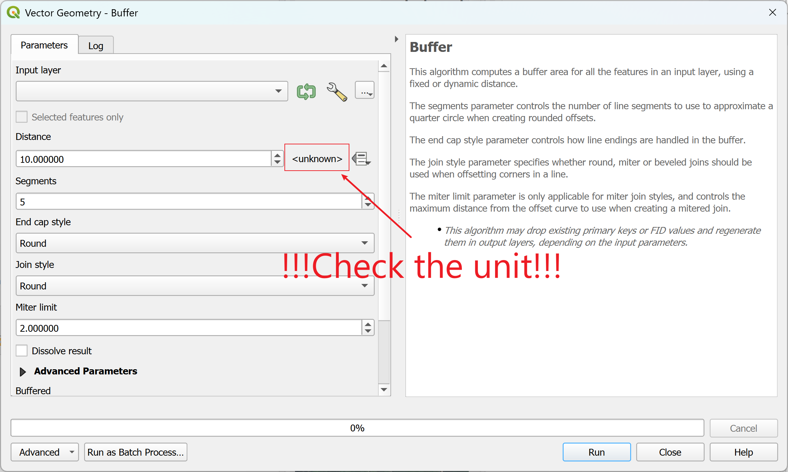</p> </figure> </div> --- ### Application Examples of Buffering <br> <div align="center"> <figure> <p>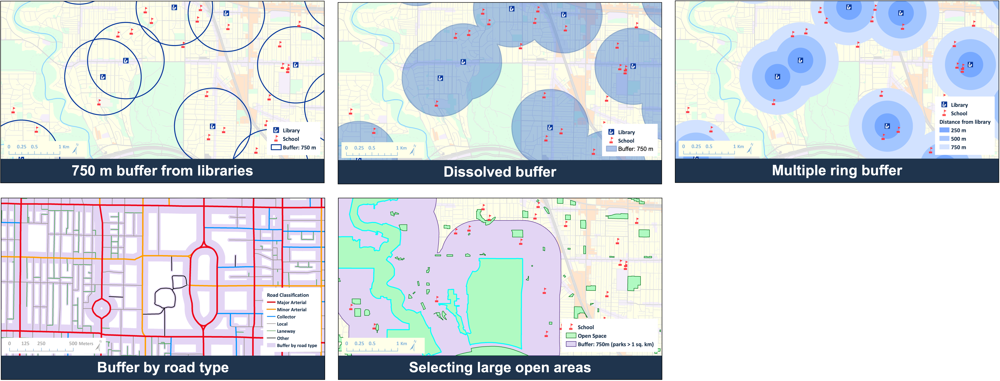</p> </figure> </div> --- ### Application Examples of Buffering: Dissolved buffer - Remove Overlapping Boundaries - Simplify Analysis <br> <div align="center"> <figure> <p>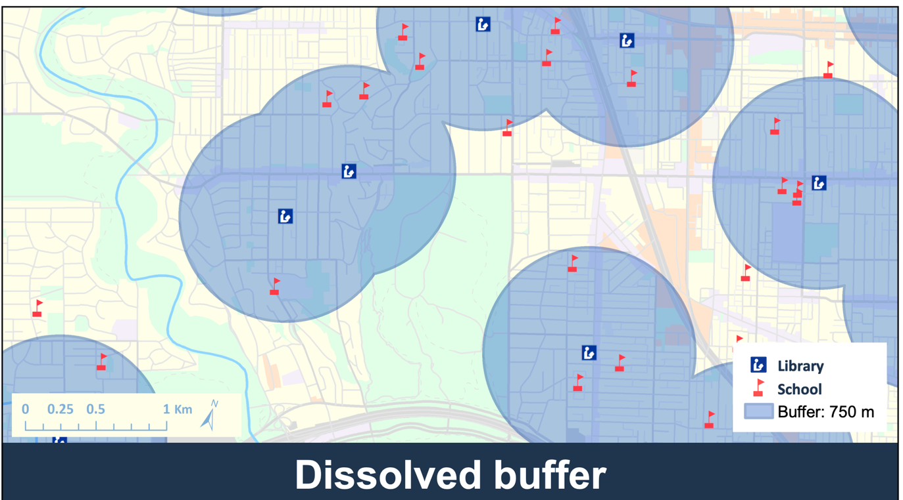</p> </figure> </div> --- name: overlay .right_half[ <figure> <p>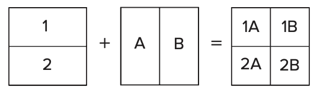</p> </figure> ] ## Overlay The ability to integrate data from two or more sources using map overlay is one of the key GIS analysis functions. Using GIS we can overlay two different thematic map layers of the same area and overlay them one on top f the other to form a new layer. Map overlay has many applications: - It can be used for the visual comparison of data layers - It can be used to create new spatial datasets by merging two or more input data layers -- The analytical method to answer this kind of questions: <xL>"Which grocery shops are within 200 m of my home?"</xL> -- Combined with buffering, we can answer the question in following steps: 1. we first buffer home with 200m distance 2. then we do an overlay to combine grocery shop data with home data ??? To answer such question, what data is needed here? --- .right_half[ <figure> <p>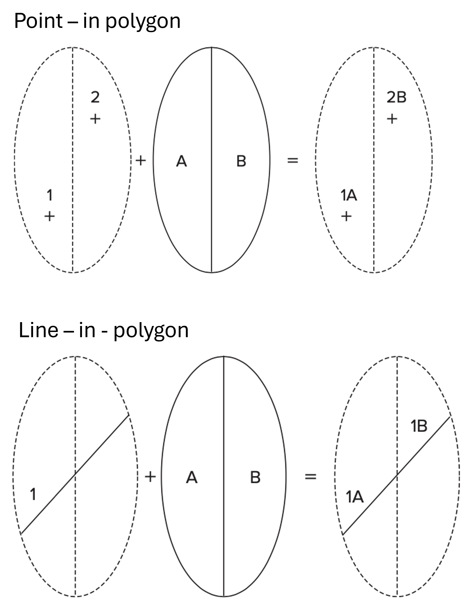</p> </figure> ] ### Overlay Methods One of the overlay datasets must always be a line or polygon layer, while the second may be point, line, or polygon. 1. point-in-polygon 2. polygon-on-point 3. line-on-line 4. line-in-polygon 5. polygon-on-line 6. polygon-on-polygon --- .right_half[ <figure> <p>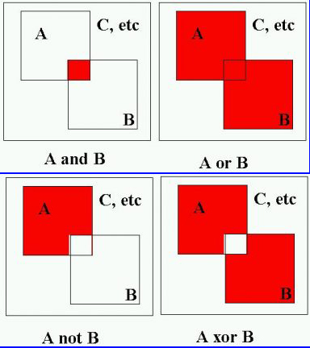</p> <figcaption>Map Overlays and Boolean Logic.</figcaption> <figsubcaption>Source: https://eeg260.academic.wlu.edu/course-notes/spatial-overlays-and-querying/map-overlays-and-boolean-logic/</figsubcaption> </figure> ] #### Overlay with Boolean operators Overlay methods can be more complex than that and therefore employ the basic Boolean operators: 1. Intersection (AND) Keeps only the areas where both layers overlap. 2. Union (OR) Combines all features from both layers, including overlaps and non-overlaps. 3. Difference (NOT) Removes areas of overlap from one layer based on another. 4. Symmetrical Difference (XOR) Keeps only the areas that are in one layer or the other, but not both. --- .right_half[ <figure> <p>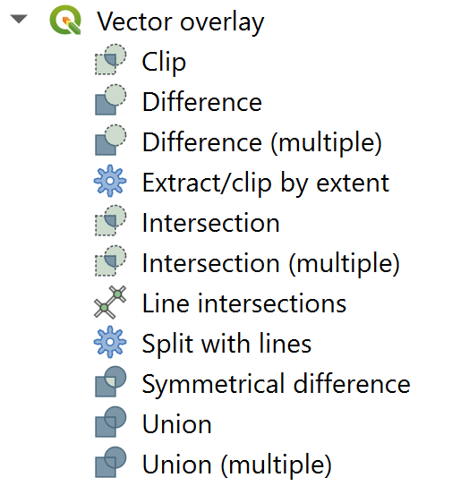</p> <figcaption>The overlay toolbox of QGIS</figcaption> </figure> ] ### Overlay toolbox by QGIS <xL>What is the difference between intersection and clip in QGIS?</xL> <div align="center"> <figure> <p>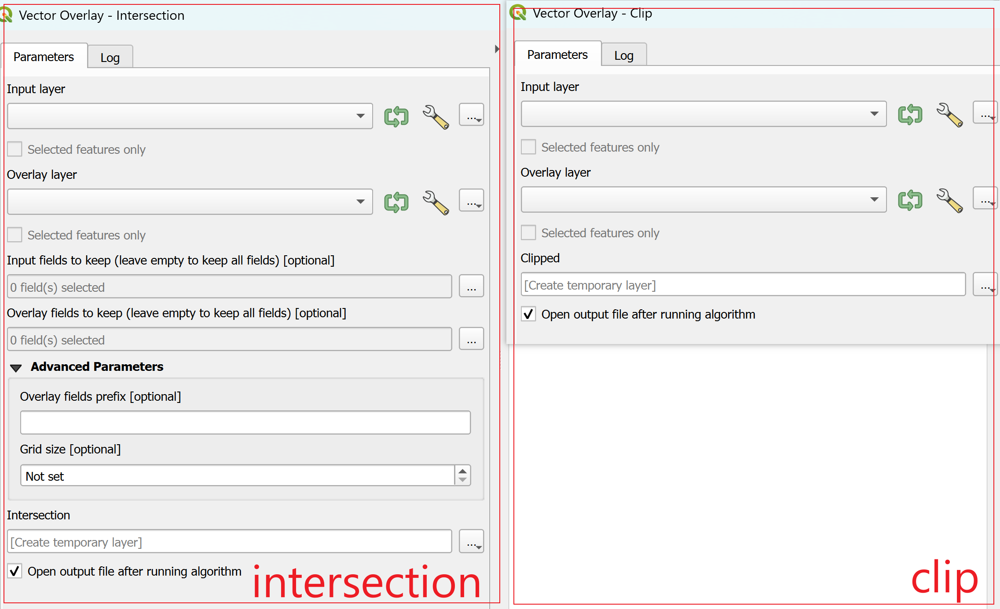</p> <figcaption>The interfaces of intersection and clip in QGIS.</figcaption> </figure> </div> --- ### Spatial Join vs. Overlay .left_half[ ### Spatial Join Attribute data Attributes from one dataset are appended to those in another dataset based on a specified relative spatial relationship. it may or may not produce the same output as overlay retains the same features on the output ] .right_half[ ### Overlay Combines both spatial and attribute data from two layers to create a new layer. a new set of features based on the geometric intersection of the two input layers. ] --- .right_half[ <figure> <p>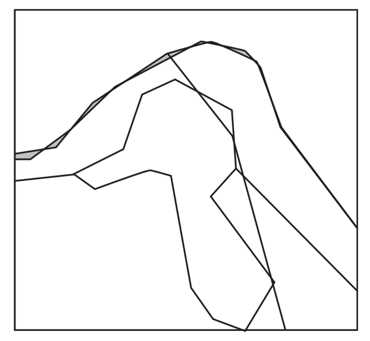</p> </figure> ] ### Overlay Errors - **Sliver polygons**: A narrow gap formed when the shared boundary of two polygons do not meet exactly. - Using plugins like [Topology Checker](https://docs.qgis.org/3.40/en/docs/user_manual/plugins/core_plugins/plugins_topology_checker.html) can help identify and fix these issues. - **Error propagation**: When inaccuracies are present in the original input and overlay layers and are carried through to an output layer. --- ### Application Examples of Overlay **Areal interpolation** issues: transferring known data from one set of polygons (source polygons) to another (target polygons) <div align="center"> <figure> <p>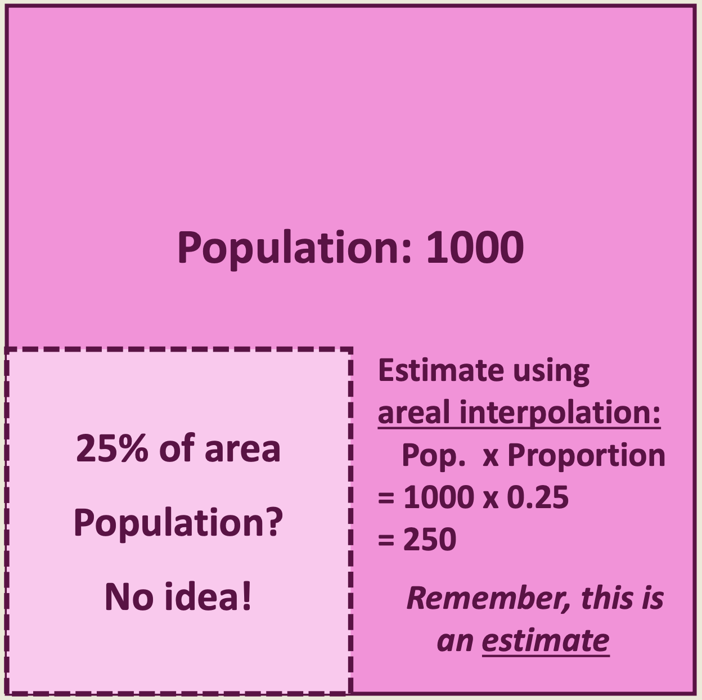</p> <figcaption>Estimating area population using overlay.</figcaption> </figure> </div> --- ### Application Examples of Overlay <div align="center"> <figure> <p>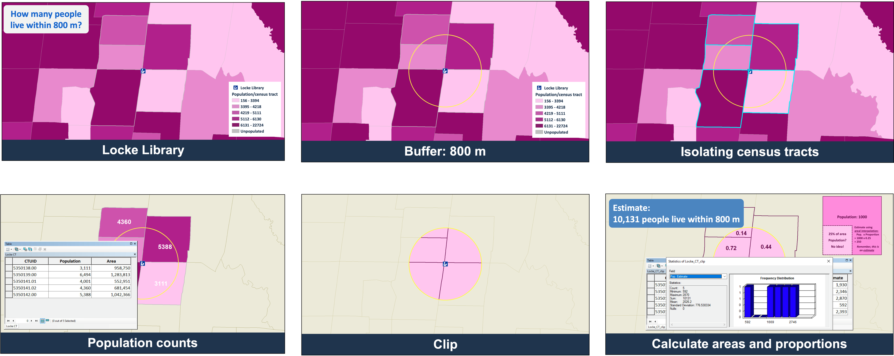</p> <figcaption>Examples of overlay.</figcaption> </figure> </div> --- name: distance .right_half[ <figure> <p>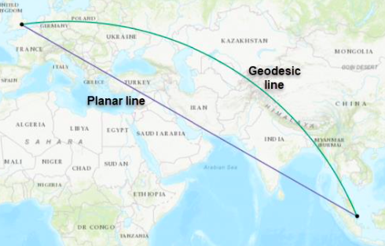</p> </figure> ] ## Distance ### Planar vs. Geodesic Distance [Youtube: Why Don't Planes Fly in a Straight Line?](https://www.youtube.com/shorts/9gJkAT3Dkxw "is:video") <br> | Feature | Planar Distance | Geodesic Distance | |----------------------|--------------------------------------|----------------------------------------| | **Earth Model** | Flat plane | Curved surface (ellipsoid/sphere) | | **Accuracy** | Lower over large areas | High accuracy globally | | **Use Case** | Local mapping, engineering | Navigation, global analysis | | **Coordinate System**| Projected (e.g., UTM) | Geographic (e.g., WGS84) | | **Computation** | Simpler, faster | More complex, slower | --- .right_half[ <figure> <p>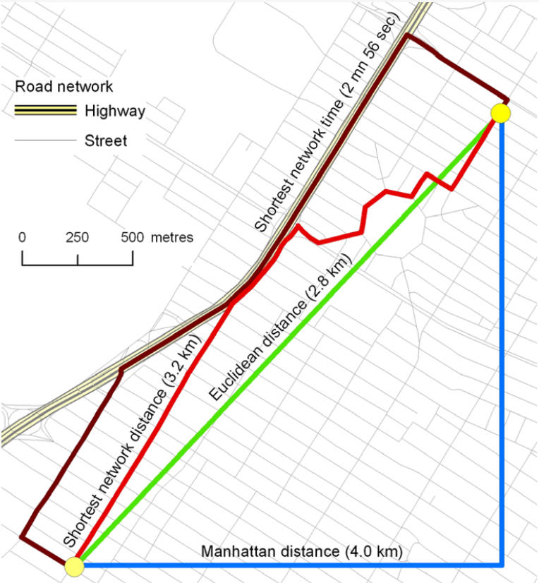</p> <figcaption>Different Type of Distance.</figcaption> <figsubcaption>Source: 10.1186/1476-072X-7-7</figsubcaption> </figure> ] ## Distance - Manhattan Distance - Euclidean Distance - Network-based Distance --- ## Practice: Mapping the data Dataset of all valid felony, misdemeanor, and violation crimes reported to the New York City Police Department (NYPD) <div align="center"> <figure> <p>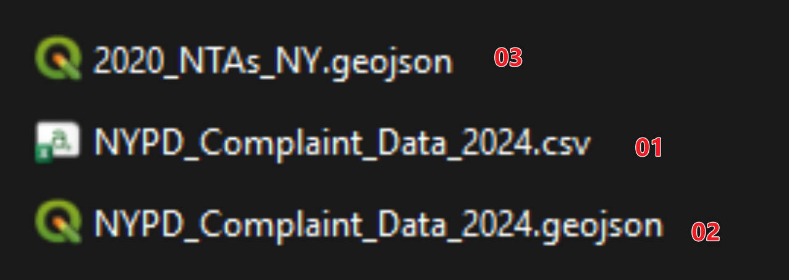</p> <figcaption>01: the complaint data to NYPD during 2024; 02: Mapped complaint data; 03: 2020 Neighborhood Tabulation Areas (NTAs).</figcaption> <figsubcaption>Source: NYPD Complaint Data Historic, 2020 Neighborhood Tabulation Areas</figsubcaption> <br> <figsubcaption>https://data.cityofnewyork.us/Public-Safety/NYPD-Complaint-Data-Historic/qgea-i56i/about_data</figsubcaption> <br> <figsubcaption>https://data.cityofnewyork.us/City-Government/2020-Neighborhood-Tabulation-Areas-NTAs-/9nt8-h7nd/about_data</figsubcaption> </figure> </div> --- name: pattern ## Pattern Analysis By mapping the spatial data set, we can have a general visual understanding of the distribution and identify any potential patterns or anomalies. However, to further determine **whether these patterns are statistically significant**, we can apply various spatial analysis techniques. Pattern analysis is the study of the spatial arrangements of point or polygon features in two-dimensional space. Spatial statistics for describing the distribution pattern. --- .right_half[ <figure> <p>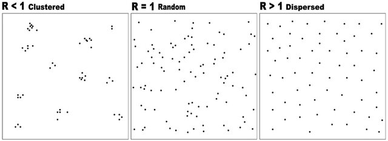</p> </figure> ] ### Pattern Analysis Methods I **Nearest neighbour analysis** Uses the distance between each point and its closest neighbouring point in a layer to determine if the point pattern is random, regular, or clustered <p> R = <span>d<sub>obs</sub></span> / <span>d<sub>exp</sub></span> </p> **Observed Mean Distance** (<span>d<sub>obs</sub></span>): Average distance between each point and its nearest neighbor. **Expected Mean Distance** (<span>d<sub>exp</sub></span>): Based on random distribution. - **R < 1** → Points are closer than expected → **Clustered** - **R ≈ 1** → Points are randomly distributed - **R > 1** → Points are farther apart than expected → **Regular/Dispersed** - **Z-score** and **p-value** for statistical significance. ??? Provide transit example: using M-values for bus route scheduling. Mention 3D city models. --- .right_half[ <figure> <p>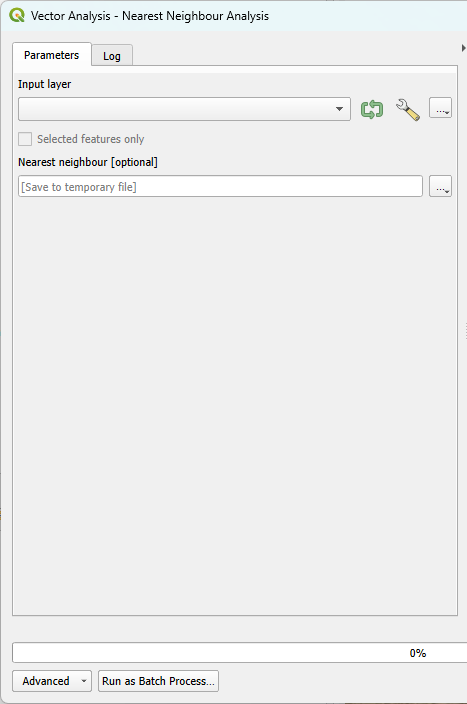</p> </figure> ] #### Practice of Nearest neighbour analysis **Research Question**: <xL>Are reported crimes in New York City spatially clustered, randomly distributed, or dispersed?</xL> --- ### Pattern Analysis Methods II **Spatial autocorrelation** Spatial autocorrelation therefore measures the relationship among **values of a variable** according to the spatial arrangement of the values. Point locations and the variation of an attribute at the locations. Spatial association or spatial dependence. <div align="center"> <figure> <p>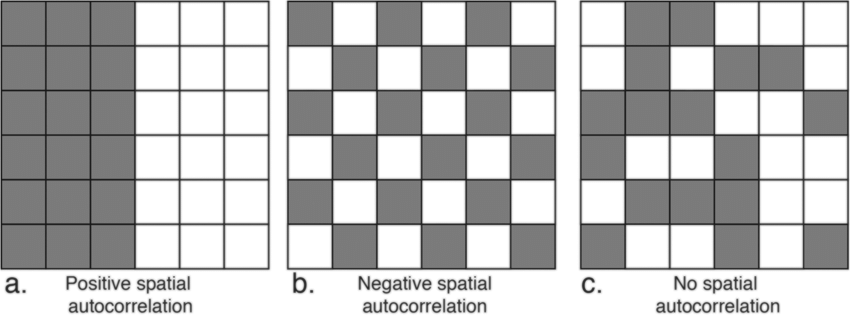</p> <figcaption>Representation of different types of spatial autocorrelation.</figcaption> </figure> </div> ??? --- ### Pattern Analysis Methods II **Application of Spatial autocorrelation** <div align="center"> <figure> <p>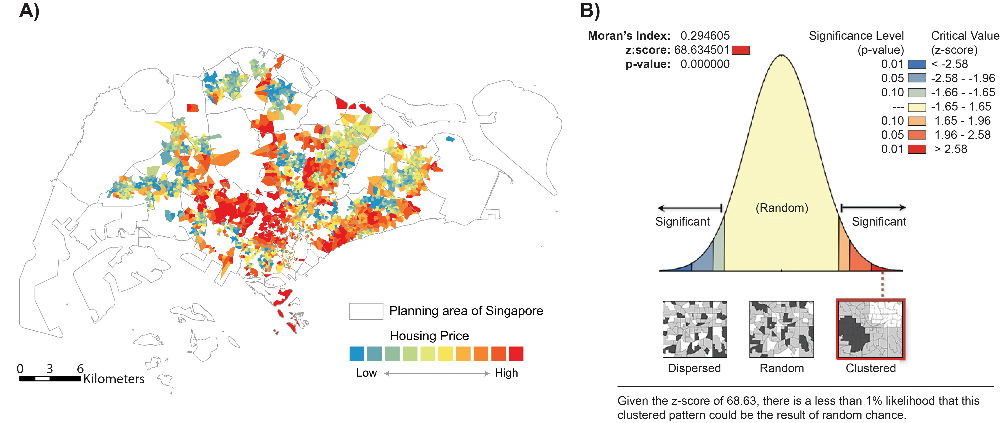</p> <figcaption>(A) The spatial patterns of average housing price at the level of Voronoi cells. (B) Global Moran's I is computed over the housing prices at these Voronoi cells.</figcaption> <figsubcaption>Source: 10.1080/24694452.2021.1935208</figsubcaption> </figure> </div> --- .right_half[ <figure> <p>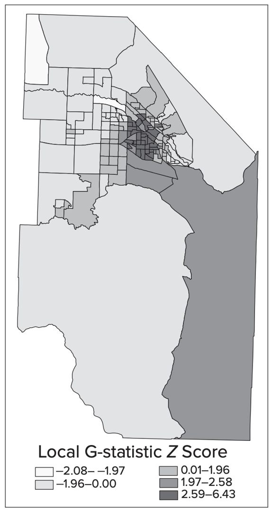</p> </figure> ] ### Pattern Analysis Methods III **Hot Spot Analysis** Hot spot analysis is a standard tool for mapping and analysing crime locations and public health data. **G-Statistic** A spatial statistic that measures the clustering of high and low values in a data set. Output is usually a **z-score** and **p-value** for each feature: | z-score | | Interpretation | |---------|-|---------------| | > +1.96 |: | Hot spot at 95% confidence | | < –1.96 |: | Cold spot at 95% confidence | | Near 0 |: | No significant clustering | --- ### Pattern Analysis Methods III **Hot Spot Analysis** <div align="center"> <figure> <p>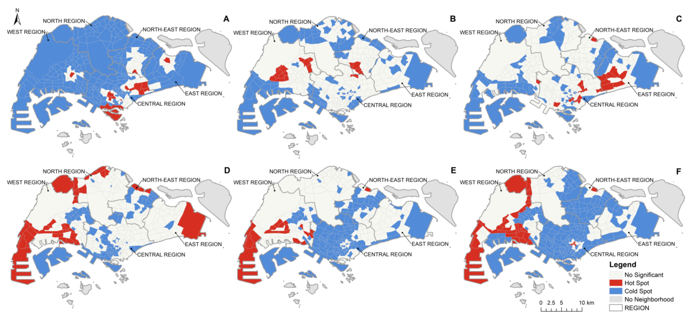</p> <figcaption>Hot spot analysis of COVID-19 cases in Singapore.</figcaption> <figsubcaption>Source: 10.3390/ijgi11030152</figsubcaption> </figure> </div> --- ### Comparison between three pattern analysis methods Nearest Neighbor Analysis = location only Spatial Autocorrelation & Hot Spot Analysis = location + attribute values -- - Global Moran’s I offers a global measure of spatial autocorrelation, indicating whether high or low values cluster together across the entire study area. - Local indicators of spatial association (LISA) can be derived from the global Moran’s I, providing insights into specific areas of significant clustering. - Hotspot analysis focuses on identifying statistically significant clusters of high or low values within a dataset, often using local measures like the Getis-Ord Gi* statistic. <xL>LISA can identify both clusters and outliers, while hot spot analysis only identifies clusters of extremes. And they have different statistical basis.</xL> --- ### Pattern Analysis Methods **GeoDa: Addition to QGIS** Advanced spatial statistics such as spatial autocorrelation (Moran’s I), spatial regression, and hotspot analysis are not part of QGIS core. These require specialized plugins or external tools. QGIS supports plugins like Spatial Analyzer and Spatial Analysis Toolbox, which provide advanced methods such as Moran’s I, GWR, clustering, and dispersion measures. These plugins often depend on Python libraries like PySAL, libpysal, and esda, which are not always pre-installed in QGIS. Installing them can be tricky because they require managing dependencies in QGIS’s Python environment GeoDa is specialized for spatial econometrics and pattern analysis, making it a good complement when QGIS plugins are hard to configure. Installing GeoDa: https://geodacenter.github.io/download --- ## Reading materials - Kang-tsung Chang and Carl M. Chang (2019), Introduction to Geographic Information Systems, 9th Edition, Chapter 11 - Geospatial Analysis 7th Edition, 2024 - de Smith, Goodchild, Longley et al. https://spatialanalysisonline.com/HTML/index.html?introduction_and_terminology.htm <br> -- <xL>Continue with Tutorial: </xL><button onclick="window.location.href='vector_tutorial.html'">Go to Tutorial of Vector Data Analysis</button>